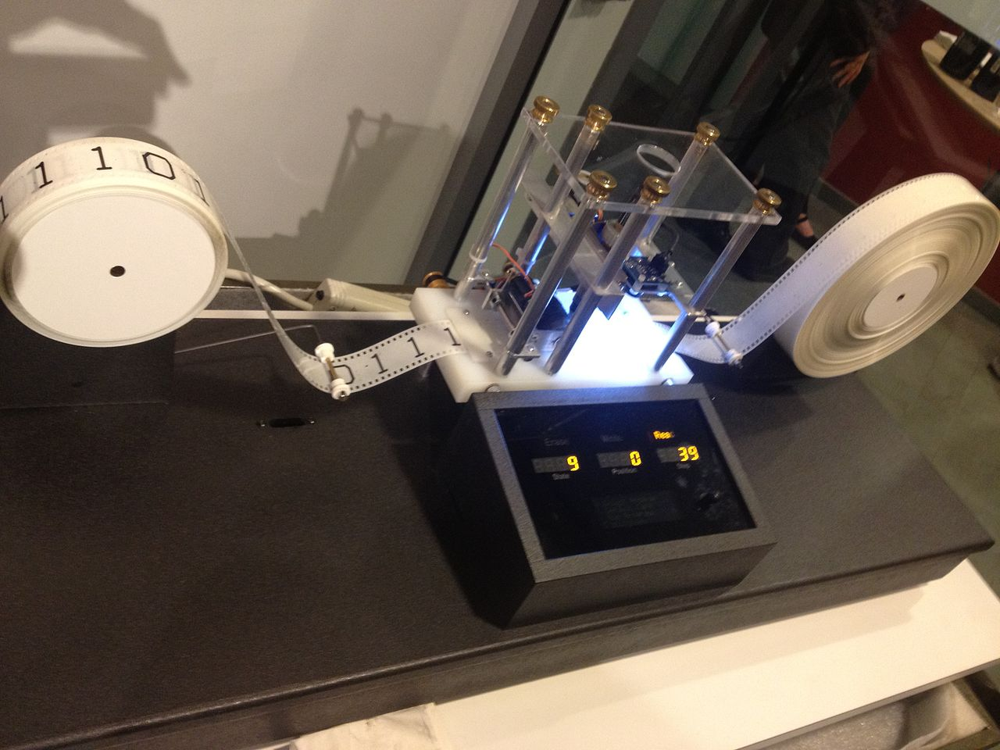

A Turing machine is a mathematical model of computation that defines an abstract machine, which manipulates symbols on a strip of tape according to a table of rules. Despite the model's simplicity, given any computer algorithm, a Turing machine capable of simulating that algorithm's logic can be constructed. The machine operates on an infinite memory tape divided into discrete "cells". The machine positions its "head" over a cell and "reads" or "scans" the symbol there. Then, as per the symbol and its present place in a "finite table" of user-specified instructions, the machine (i) writes a symbol (e.g., a digit or a letter from a finite alphabet) in the cell (some models allow symbol erasure or no writing), then (ii) either moves the tape one cell left or right (some models allow no motion, some models move the head), then (iii) (as determined by the observed symbol and the machine's place in the table) either proceeds to a subsequent instruction or halts the computation. The Turing machine was invented in 1936 by Alan Turing, who called it an "a-machine" (automatic machine). With this model, Turing was able to answer two questions in the negative: (1) does a machine exist that can determine whether any arbitrary machine on its tape is "circular" (e.g., freezes, or fails to continue its computational task); similarly, (2) does a machine exist that can determine whether any arbitrary machine on its tape ever prints a given symbol. Thus by providing a mathematical description of a very simple device capable of arbitrary computations, he was able to prove properties of computation in general—and in particular, the uncomputability of the Entscheidungsproblem ('decision problem'). Thus, Turing machines prove fundamental limitations on the power of mechanical computation.[17] While they can express arbitrary computations, their minimalist design makes them unsuitable for computation in practice: real-world computers are based on different designs that, unlike Turing machines, use random-access memory. Turing completeness is the ability for a system of instructions to simulate a Turing machine. A programming language that is Turing complete is theoretically capable of expressing all tasks accomplishable by computers; nearly all programming languages are Turing complete if the limitations of finite memory are ignored.
